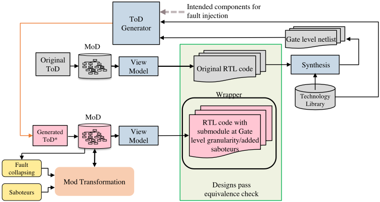
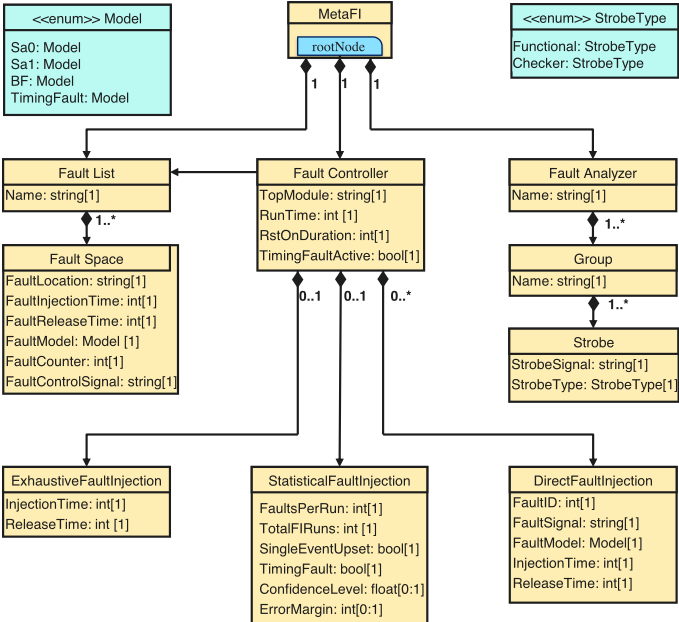
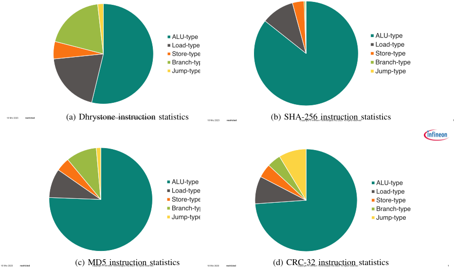
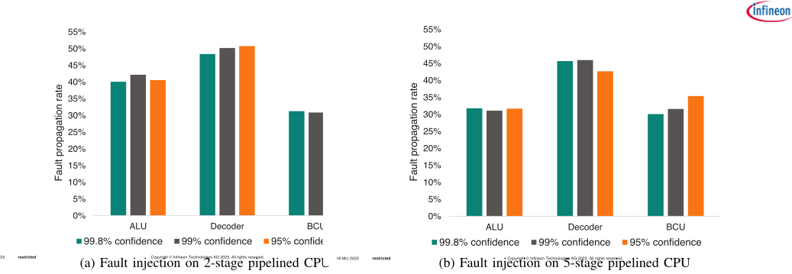
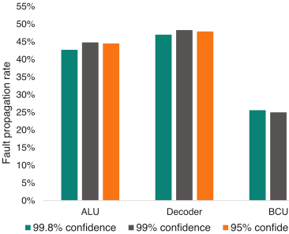
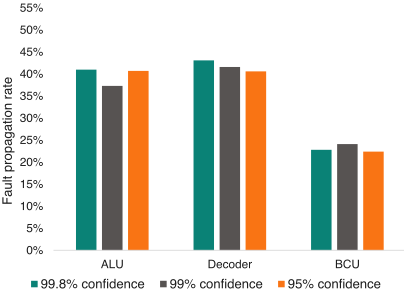
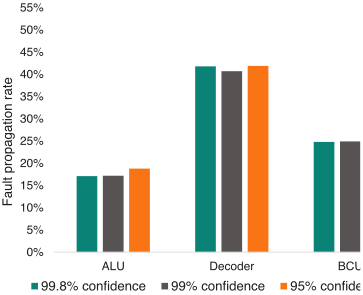
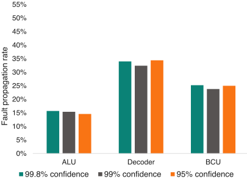
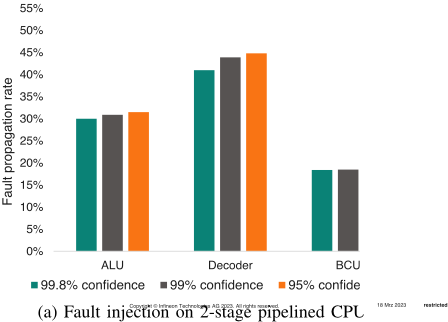
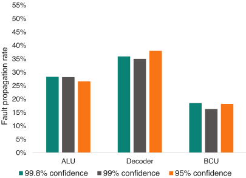

一种面向 RISC-V 变体的统计与模型驱动综合故障传播分析方法
论文针对 ISO 26262 推荐的故障注入验证耗时耗力、故障空间随设计规模指数增长的问题，提出一种自动化、模型驱动的 Statistical Fault Injection (SFI) 框架。方法上利用 MetaRTL 生成 RTL 并综合出 gate-level netlist，由 ToD Generator 构建混合粒度设计：仅对 ALU、Decoder 等注入目标保持门级并插入 saboteur，其余保持 RTL；再以 MetaFI 元模型（Fault Controller/Fault List/Fault Analyzer）经模板引擎自动生成 SystemVerilog 或 Verilator C++ testbench，框架与仿真器厂商无关，并按置信水平与误差裕度自动确定注入故障数。在两个 RISC-V CPU（2 级与 5 级流水）上以 Dhrystone、SHA-256、MD5、CRC-32 四种 workload 实验，结果显示三种置信水平下 Fault Propagation Rate 均落在 5% 误差裕度内，Decoder 最脆弱、Branch Control Unit 最不敏感，且传播率随 workload 变化。该方法对团队基于功能 stimulus 的故障注入、fault grading 与 FuSa TFMEA/FMEDA 论证有直接借鉴价值。
ISO 26262 推荐以故障注入验证安全关键设计，但 N 个节点对应 2N 个 single stuck-at 故障，穷举注入在计算与人力上不可行，且该过程耗时耗力；同时缺少厂商无关的自动化工具来衔接安全规范与故障注入 campaign。论文要解决的问题是：在给定置信水平与误差裕度下，通过统计采样大幅削减需注入的故障数量，并以模型驱动方式自动化地支持不同设计变体的故障传播分析。
提出模型驱动的 SFI 框架：(1) 用 MetaRTL（基于 Python API 的 RTL 生成框架）生成 RTL 并综合出 gate-level netlist；(2) ToD Generator 读取 netlist 与用户输入，生成混合粒度的 Template-of-Design，仅对选定注入目标（ALU、Instruction Decoder、Branch Control Unit）保持门级并加入 saboteur，其余保持 RTL，兼顾 RTL 仿真速度与门级精度；(3) 定义 MetaFI 元模型，包含 Fault Controller（TopModule、RunTime、ConfidenceLevel、ErrorMargin 等）、Fault List（FaultLocation、FaultInjectionTime、FaultModel 等）与 Fault Analyzer（Group/Strobe，StrobeType 区分功能输出与 safety mechanism 的 checker strobe），Python 脚本从元模型实例提取数据，经模板引擎自动生成 SystemVerilog 或 Verilator C++ 的 fault handler testbench；(4) 依据 Leveugle 等的统计采样公式，用户仅需输入仿真时长、置信水平与误差裕度即可自动确定注入故障数；故障仿真结果与无故障参考仿真对比完成故障分类并记录日志。
在 5% 误差裕度下，95%（384 个注入故障）、99%（663 个）、99.8%（955 个）三种置信水平的 SFI campaign 中，各组件的 Fault Propagation Rate 均落在 5% 误差裕度内，仿真总时长为 37868 个时钟周期
2 级流水 CPU 的 Fault Propagation Rate 比其他配置高约 5-10%，归因于其面积更小、缺少 5 级流水 CPU 中的防护逻辑；2 级 CPU 跑 Dhrystone 失效率最高，5 级 CPU 跑 MD5 失效率最低
Decoder 是最易失效的组件，Branch Control Unit 因仅依赖 branch/jump 类指令激活故障而最不易受影响；Fault Propagation Rate 随执行的 workload 变化
5 级 CPU 的 ALU 故障位置数比 2 级 CPU 多 8.1%，Decoder 仅略有增加，Branch Control Unit 数量不变
引用 Leveugle 统计方法：对 10^4 个故障位置、10^6 时钟周期（总体 N=10^10）的设计，仅需 23784 次注入即可在 1% 误差裕度下达到 99.8% 置信度
与 Cadence Jasper FSV、Siemens Architectural Analysis/Analyze Faults 等厂商绑定工具不同，该框架 vendor-independent，可对接任意 Verilog/SystemVerilog 仿真器/emulator（含 Verilator C++）；与 GenFi、MaFIN/GeFIN 等基于微架构模拟器（MARSS/Gem5）或 VPI 的方法不同，本文通过 MetaRTL 元模型驱动的混合 RTL/门级粒度设计加 saboteur 实现注入，兼顾 RTL 仿真速度与门级精度，并以元模型+模板引擎实现从规范到注入 campaign 的自动化，可跨 RISC-V 设计变体复用。
相关度级别：high
命中能力域：2.5 功能安全与安全机制 | 2.6 Fault simulation/Z01X/TFMEA | 2.7 CyberSec/自动化
理由：论文直接命中 2.5 与 2.6：其 SFI campaign 明确对齐 ISO 26262，以功能 workload 驱动故障注入、统计评估 Fault Propagation Rate 并对故障分类，元模型中 StrobeType 显式区分功能输出与 safety mechanism 的 checker strobe 输出，正是团队'基于功能 stimulus/pattern 的 fault injection、fault grading 与 FuSa TFMEA/FMEDA 论证关联'能力域的核心技术内容，可作为 Z01X 类功能故障仿真/注入工作的方法参照与交叉验证对象。同时其元模型+模板引擎的模型驱动自动化生成方式，与团队 2.7 中'数据源到 FMEDA/DFMEA/JAMA export 自动化'的工程自动化方法论相通（但论文本身不涉及 CyberSec threat modeling，2.7 仅在自动化方法论维度命中）。
建议动作：深入精读并做内部分享
Endri Kaja ∗† , Nicolas Gerlin ∗† , Ungsang Yun ∗‡ , Jad Al Halabi ∗† , Sebastian Prebeck ∗‡
, Dominik Stoffel † , Wolfgang Kunz † , Wolfgang Ecker ∗‡ 地址：Am Campeon 1-15, Neubiberg - 85579，德国 ∗ 英飞凌科技股份公司（Infineon Technologies AG） ‡ 德国慕尼黑工业大学（Technische Universität München） 电子邮箱：Firstname.Lastname@infineon.com 德国莱茵兰-普法尔茨凯泽斯劳滕-兰道工业大学（Rheinland-Pfälzische Technische Universität Kaiserslautern-Landau） 电子邮箱：dominik.stoffel@rptu.de, wolfgang.kunz@rptu.de
现代设计日益增长的复杂性，加之严格的安全标准，为确保系统可靠性带来了新的挑战。开发有效的安全验证技术对于防止任何与安全相关的错误进入生产阶段至关重要。尽管设计复杂性在设计和验证过程中都构成了重大挑战，但必须认识到，安全验证本身就存在固有困难，并会带来各种挑战，这与设计复杂性无关。ISO26262 指南建议使用故障注入来验证安全关键设计，但这一过程既耗时又费力。在本文中，我们提出了一种自动化且模型驱动的统计故障注入技术，该技术可应用于不同的设计变体。统计故障注入（SFI）方法减少了可注入故障的数量，从而降低了整体复杂性。我们将该技术应用于两个 RISC-V 变体，同时运行四种不同的 CPU 工作负载。实验结果证明了 SFI 的有效性，能够以较高的置信度提供可靠的结果。
近年来，AI 加速器、RISC-V 生态系统、物联网（IoT）、信息物理系统（Cyber-Physical Systems）以及智能系统（Smart Systems）等技术取得了快速且呈指数级的进步，由此带来了复杂的开发流程。这一流程不仅需要智能化、自动化的数字设计技术，还需要精密的方法来确保这些设计的正确性。然而，尽管取得了这些技术进步，验证过程仍然是一项重大挑战。它如同瓶颈一般，阻碍了设计生产力的提升，并压缩了上市时间（Time-to-Market）进度。IC/ASIC 设计与验证复杂度的不断上升可归因于多种因素，包括设计规模的日益增大以及额外设计前提条件的出现。这些前提条件超出了基本功能的范畴，还涵盖安全（safety）与信息安全（security）等要素。如今，许多片上系统（SoC）被应用于安全关键领域，例如汽车、航空航天、医疗保健和金融系统。在这些领域中，开发将安全置于一切之上的系统或产品被赋予最高优先级。这些专用系统被称为安全关键设计，因为它们在保障人类生命安全和维护敏感操作的完整性方面发挥着关键作用。根据 Wilson Research Group 的调查，44% 的 ASIC 项目已在其设计中集成了安全关键特性 [1]。国际汽车标准 ISO26262 建议使用故障注入来验证设计的安全关键方面。
故障注入过程在评估系统的韧性与容错能力方面起着至关重要的作用。通过有目的地引入故障，设计人员可以深入了解系统在不同场景下的行为，从而获得宝贵的见解。在处理由 N 个节点组成的设计时，可能的单固定型故障（single stuck-at fault）模型数量呈指数级，共计 2N 种可能的故障。鉴于故障的任意性，故障注入活动通常采用统计与概率的方法，例如统计故障注入（Statistical Fault Injection, SFI）。SFI 的做法是从完整故障集合中随机选取一个故障子集，并对其进行仿真。随后推导出样本覆盖率，即随机样本中被检测到的故障与样本中全部故障之比。该覆盖率用于估计完整故障集合中的故障覆盖率。为完成这一过程，还需评估误差范围与置信区间。SFI 的目标是在减少故障注入所需计算量的同时，仍能获得对系统故障覆盖率的可靠估计。为了有效满足安全分析的各项要求，一个自动化且高效的故障注入工具变得不可或缺。该工具充当所投入的工作与最终故障注入活动之间的桥梁，确保整个过程得到精简并满足必要的标准。
†
在本文中，我们介绍了一个通用且自动化的框架，该框架旨在生成各种各样的 SFI 活动，同时以最少的工作量弥合规格说明与故障注入过程之间的差距。该框架与供应商无关，可与任何基于 Verilog/SystemVerilog 的仿真器/模拟器配合使用。Ecker 等人 [2], [3] 开发了一个名为 MetaRTL 的专有自动化 RTL（Register Transfer Level，寄存器传输级）生成框架，该框架利用 Python API 基于顶层元模型规范生成 RTL 设计。通过使用该框架，人工工作量显著减少，从而提高了设计生产率。该 RTL 生成流程被用于生成兼具 RTL 与门级粒度的设计，同时为其配备故障注入能力 [4]，如图 1 所示。
在故障注入过程中，首先使用 MetaRTL 创建设计的 RTL，然后进行综合以生成门级网表。为了选择需要进行故障注入的预期组件，Template-of-Design（ToD）生成器——一个 Python 脚本——会同时读取网表和用户输入。利用这些数据，ToD 生成器会生成一个具有混合粒度的新 ToD。例如，如果选择流水线处理器核的 Execute 级进行故障注入，则所生成的 ToD 会仅根据网表数据以门级粒度定义 Execute 级。处理器的其余组件则与原始 RTL 的表示方式完全相同。随后，通过添加 saboteur 来修改 Model-of-Design（MoD），saboteur 是一种在激活时能够注入故障的小型硬件组件。只有设计中经受故障注入的选定部分保持门级粒度，与此同时，其余部分则以 RTL 粒度表示。这种方法能够在不牺牲门级故障仿真精度的前提下实现快速的 RTL 故障仿真。因此，它使得在不同 RISC-V 变体上自动进行 SFI 成为可能。

故障注入与安全验证是学术界和工业界均已得到充分研究的课题。下文将介绍其中一些相关技术。
Cadence® Jasper™ FSV 工具支持形式化故障注入与传播分析，以辅助安全性与信息安全验证。类似地，Siemens EDA® 提供了形式验证方法，例如 Siemens Architectural Analysis 和 Siemens Analyze Faults，允许用户自定义故障场景或从预定义场景中进行选择。需要注意的是，这些工具均为特定于厂商的工具。相比之下，GenFi [5] 是一种学术方法，它在 MARSS 和 Gem5 等微体系结构模拟器上进行故障注入。而 Baraza 等人在 [6]、[7] 中提出的方法，则是利用 saboteur 和 mutant 来修改设计的硬件描述。在另一项工作中，Kammler 等人 [8] 提出了一种基于 Verilog 的框架，该框架利用 Verilog 编程接口（VPI）来执行故障注入。Kaliorakis 等人 [9] 开发并提出了一种将故障注入能力集成到微体系结构模拟器中的方法。具体而言，他们对现有模拟器（MARSS 和 Gem5）进行了增强，使其具备故障注入能力，并分别命名为 MaFIN 和 GeFIN。他们还实现了一个 Fault Mask Generator，用于针对位翻转、永久故障和间歇故障等多种故障类型生成随机故障掩码。这些故障掩码随后交由 Injection Campaign Controller 处理，该控制器向 Injector Dispatcher 发送注入请求，而 Injector Dispatcher 是一个直接与模拟器对接的模块。所提出的方法通过在 x86 和 ARM 处理器上开展的实验进行了评估。与之类似，Parasyris 等人 [10] 的另一项研究对 Gem5 模拟器进行了修改，为线程引入了额外的功能，从而允许修改信号的运行值（run-values）。
与 ISO26262 标准相一致的统计故障注入（SFI）活动被广泛认为是最常用的技术。要理解 SFI 活动的基本数学定义，重要的是要考虑故障采样。故障覆盖率估计的准确性取决于样本量，样本量代表样本中故障的总数。较大的样本量可以降低覆盖率估计的误差范围。合适的样本量的确定基于覆盖率估计所期望的精度水平。Leveugle 等人 [11] 提出了对与 SFI 相关的误差进行估计和量化的方法，为故障注入结果的可信度提供了宝贵的见解。他们的主要假设认为，整个故障注入总体的特性（包括在任何时钟周期发生的所有潜在故障模型）服从正态分布。随机故障采样过程确保初始总体中在特定周期的每一个故障配置都具有同等的可能性被选入样本。这是通过在随机选择中使用均匀分布来实现的 [11]。因此，每次活动所需注入的故障数量 n 可以通过 [11] 计算：
其中：
通常 N 非常大，因此可以通过假设 N - > ∞ 来简化公式 1，如下所示：
作为示例，让我们考虑一个具有 10 4 个故障位置的设计，且仿真将运行 10 6 个时钟周期。N 计算得到 10 10，可以假设其非常大，即 ∞。在给定误差范围和置信水平下所需注入的故障数量如表 I 所示 [11]。从表中可以看出，即使对于非常大的故障注入总体，也仅需 23784 次故障注入即可在 1 % 误差范围内实现故障注入结果 99.8% 的置信度。
| 95% confidence z = 1.96 | 99%confidence z = 2.5758 | 99.8% confidence z = 3.0902 | |
|---|---|---|---|
| e = 5% | n = 384 | n = 663 | n = 955 |
| e = 1% | n = 9581 | n = 16519 | n = 23874 |
| | 95% confidence z = 1.96 | 99%confidence z = 2.5758 | 99.8% confidence z = 3.0902 |
本文提出了一种全面且具有适应性的框架，其重点在于生成范围广泛的统计故障注入实验，同时最大限度地减少弥合规范与故障注入过程之间差距所需的工作量。该框架被设计为独立于任何特定供应商，因而可与各种基于 Verilog/SystemVerilog 的仿真器/模拟器兼容。该框架从一个读取器（reader）组件开始，该组件负责读取设计并将故障列表转换为形式化模型。故障列表完成形式化之后，下一步是使用一个称为 FI-model 的中间模型来定义故障注入特性。该模型包含执行故障注入实验所需的全部必要信息，例如故障属性以及待分析的设计选通信号（signals）。最后，采用一个模板引擎将该模型转换为最终的故障处理测试平台（testbench），该测试平台既可以用 SystemVerilog 实现，也可以用基于 Verilator 的 C++ 实现 [12]。这使得该框架具备灵活性，并能够与不同的仿真环境兼容。
自动化注入活动的核心元素是 MetaFI 元模型（其中 FI 代表故障注入，Fault Injection），该元模型规定了故障注入活动的类型，以及在活动过程中应当分析的特定输出/寄存器。该元模型如图 2 所示。若以更全面、更科学的方式来描述，该元模型可被视为一个框架，它概括了故障注入活动所需的全部基本组件和特性。这些组件包括：(i) Fault Controller、(ii) Fault List 和 (iii) Fault Analyzer。元模型的根节点基于上述各组件与多组类建立连接。作为元模型组成部分的 Fault Controller 由一组类和属性构成，用于定义故障注入的目的和故障模型。在 Fault Controller 类中，有三个关键属性：TopModule，用于标识进行故障注入的寄存器传输级（RTL）设计的最高层模块；RunTime，以时钟周期数确定仿真或硬件仿真运行的持续时间；RstOnDuration，指定复位有效的持续时间；以及 TimingFaultActive，指示是否支持时序故障。此外，Simulation Controller 类通过组合关系与另外三个类相关联，即 StatisticalFaultInjection、DirectFaultInjection 和 ExhaustiveFaultInjection。然而，就本文而言，仅考虑与统计故障注入（SFI）相关的特性。元模型中的 StatisticalFaultInjection 类具有以下属性：FaultsPerRun，表示单次运行中要注入的故障数量，指示故障的多重性；TotalFIRuns，定义要执行的独立故障注入运行的数量；SingleEventUpset，确定是否应仅在存储单元处引入位翻转；TimingFault，确定是否应仅注入时序（延迟）故障；ConfidenceLevel，表示与抽样过程相关的置信水平；以及 ErrorMargin，表示可接受的误差范围，这两者均可基于 TotalFIRuns 计算得出。

1 版权所有 © Infineon Technologies AG 2023，保留所有权利。受限 2023年3月18日 Fault List 类负责记录被有意引入系统中的故障（即所谓的故障空间）的详细信息。该类与 Fault Space 类之间存在一对多（1..*）关系，这意味着故障空间中的每个故障都会被纳入故障注入的考虑范围。故障空间涵盖了被注入故障的所有特征和属性。这些属性包括：FaultLocation，用于指定故障在系统中的位置；FaultInjectionTime，表示故障被注入系统的时间；FaultReleaseTime，表示故障从系统中被移除的时间；FaultModel，描述所注入故障的具体模型或类型；FaultCounter，用于跟踪故障注入执行的次数；以及 FaultControlSignal，用于确定在特定故障位置控制故障发生与否的信号。
Fault Analyzer 是元模型中负责收集和评估故障注入实验所得数据的组件。该组件与 Group 类之间存在一对多关系；Group 类表示设计中的各种模块和子模块，以及这些模块中需要用于分析的输出。Group 类与 Strobe 类之间建立了一对多关系；Strobe 类定义了所有需要分析的输出信号。StrobeSignal 属性用于标识特定的输出信号。此外，StrobeType 属性用于区分功能选通（functional strobe）与检查器选通（checker strobe）：前者表示设计的功能输出，后者表示安全机制的输出。枚举类 StrobeType 对不同类型的输出进行了分类。
一个 Python 脚本从元模型实例中提取数据，随后利用这些数据生成 SystemVerilog 和 C++ 两种语言的测试平台（testbench）代码。使用生成的测试平台，通过 MetaRTL 创建 DUT。接着，采用故障仿真框架执行故障仿真实验（fault simulation campaign）。在含故障的仿真过程中，每次仿真的结果数据都会被记录下来。随后将这些记录的数据与作为参考的无故障仿真所获得的数据进行比较。通过这一比较，可以依据故障对设计行为的影响对故障进行分类。最后，故障分类过程的结果被存储在一个日志文件中，以供进一步分析。
我们选择了四个各具特色的基准测试作为中央处理器（CPU）的工作负载，旨在模拟真实的故障传播场景。这些经过精心挑选的基准测试涵盖了多个计算领域，能够对系统在各种条件下的行为进行全面评估。我们进行这一选择的首要目标是构建一个稳健的故障传播分析框架，每个基准测试都是因其特定特性和相关性而被选中的。
我们基准测试阵容中的第一个是著名的 Dhrystone 基准测试，它最初由 Reinhold P. Weicker 于 1984 年开发。Dhrystone 历来被用作评估系统整数运算性能的合成基准测试。诚然，以当今的标准来看，该基准测试的结构被认为相对简单，但其经久不衰的知名度以及其所涉及的高比例控制流操作，使其成为我们故障传播分析中一个引人关注的工作负载。尽管 Dhrystone 略显陈旧，但它在该领域持续的重要性使其值得被纳入本研究。
我们纳入研究的其余三个基准测试是密码学算法，它们在我们的故障传播分析中各自发挥着独特的作用。这些基准测试是 SHA-256、MD5 和 CRC-32，代表了密码学哈希函数和校验和算法。这些选择取自 Embench 套件（Embedded Benchmark），这是一个开源的 C 语言基准测试集合，由 22 个通常部署于深度嵌入式系统的实际应用组成。图 3 展示了上述基准测试的指令统计信息，即不同指令类型所占的百分比。
我们特别选择 Embench 套件中的密码学算法，是因为它们被广泛使用，并且一旦出现故障行为，其安全影响事关重大。鉴于密码学工作负载在确保数据完整性和机密性方面发挥着关键作用，将其纳入我们的分析不仅切题，而且十分必要。这些算法在容错和错误传播方面带来了独特的挑战，使其成为我们故障分析基准测试套件中极具价值的补充。我们研究中使用的所有基准测试均使用 GCC 11.1 编译，优化级别为 -O3。此外，我们将 newlib 4.1.0 库配置为优化级别 -O2 并启用垃圾回收。

图 4 至图 7 中的图表结果表明，尽管各组件的软件故障注入（SFI）试验的置信水平存在差异，故障传播率始终处于 5% 的可接受误差范围之内。这巩固了所采用方法的有效性。值得注意的是，与其他基准测试相比，在 2 级流水线 CPU 上观察到的故障传播率略高（介于 5-10% 之间）。这一差异可归因于该设计的面积较小，其未像 5 级流水线 CPU 那样加入额外的逻辑来防止大量故障。在所有组件中，运行 Dhrystone 基准测试的 2 级流水线 CPU 表现出最高的失效率，而运行 MD5 基准测试的 5 级流水线 CPU 则表现出最低的失效率。译码器组件是最容易发生故障的部件，需要采取保护措施。相反，分支控制单元最不易受故障影响，因为其故障的激活依赖于分支和跳转等特定类型的指令。尽管如此，从结果中可以明显看出，故障传播率受所执行工作负载的影响。

为了实现并评估我们的方法，我们利用 MetaRTL 创建了两个不同的基于 RISC-V 的 CPU 子系统。其中一个子系统由 2 级流水线 CPU 组成，而另一个子系统则由 5 级流水线 CPU 组成。这些被测设计（Designs-under-Test, DUT）包含 RV32-IMC CPU、指令存储器和数据存储器、指令总线和数据总线以及外设等组件。CPU 的规格通过元模型进行定义，从而能够通过调整所支持的指令和扩展等参数来生成不同的 RISC-V 变体。我们的故障注入实验针对特定组件（如算术逻辑单元（ALU）、指令译码器和分支控制单元）开展，以实施 SFI。这些组件以门级粒度进行描述，而 DUT 的其余部分则保持原始的寄存器传输级（RTL）粒度。由于 SFI 适用于随机故障，我们在随机位置、随机仿真时刻注入随机故障模型。如表 I 所示，该框架根据所需的置信水平和误差范围自动确定待注入故障的数量。用户唯一需要提供的输入是仿真时长、置信水平和误差范围。图 4 至图 7 描绘了在上述三个组件上执行 SFI 期间的故障传播率（Fault Propagation Rate），该指标指传播到 CPU 原始输出的故障所占的比例。SFI 过程在 5% 的误差范围下进行，并采用三种不同的置信水平：95%（注入 384 个故障）、99%（注入 663 个故障）和 99.8%（注入 955 个故障）。仿真总共进行了 37868 个时钟周期。表 II 展示了三个组件（即 ALU、译码器和分支控制单元）各自的故障位置总数。从表中可以观察到，5 级 CPU 的 ALU 与 2 级 CPU 相比多出 8.1% 的故障位置，而 5 级 CPU 译码器的位置数量仅有轻微增加。相反，分支控制单元的位置数量没有变化，这是因为设计上的改动并不影响分支的处理方式。
| Component | 2-stage pipelined CPU | 5-stage pipelined CPU |
|---|---|---|
| ALU | 5376 | 5812 |
| Decoder | 3504 | 3514 |
| Branch Control Unit | 754 | 754 |
| Component | 2-stage pipelined CPU | 5-stage pipelined CPU |






本文提出了一种结合统计分析与模型驱动技术的先进方法，用于评估不同版本 RISC-V 处理器的故障传播分析。为开展全面的实验，本文采用了两个独立的 RISC-V CPU 子系统，并对每个子系统使用四种不同的工作负载或基准测试进行了多次试验。实验结果表明，SFI 技术被证明极为成功，因为无论所采用的置信率如何变化，故障传播率始终保持在 5% 的误差范围之内。
本研究为未来的研究工作奠定了基础，后续将与其他故障仿真工具（包括商业工具和开源工具）进行比较和评估。